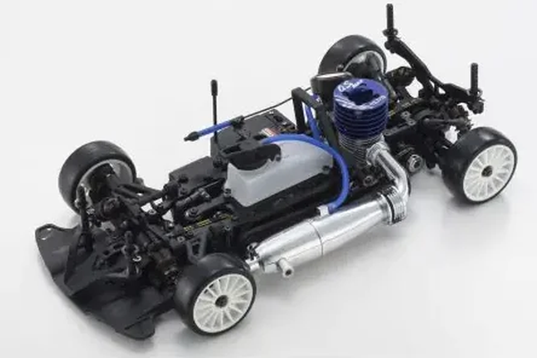

京商 V-One R4s II

引用元画像：京商公式サイト
📋 基本情報
| メーカー | 京商（Kyosho） |
|---|---|
| 機種名 | V-One R4s II（ラバータイヤ仕様） |
| シャーシ略称 | V-One R4s II |
| 型番 | 33206 |
| 発売時期 | 2017年5月 |
| 価格 | ¥54,780（税込） |
| 生産状況 | 生産終了 |
| カテゴリー | ラジコンカー（1/10スケール GP 4WD） |
| サブカテゴリー | 12-15エンジン ツーリングカー（ピュアテンGP 4WD、ラバータイヤ仕様） |
| シリーズ | V-ONE R4sシリーズ 第2世代 |
📏 シャーシスペック
| 全長 | 368mm |
|---|---|
| 全幅 | 200mm |
| 全高 | 105mm |
| ホイールベース | 258mm |
| トレッド | フロント174mm / リヤ170mm |
| ギヤレシオ | 1速8.13:1 / 2速5.6:1 |
| タイヤ | 1/10用ラバータイヤ（別売） |
| フレーム | R4s II専用ダブルデッキアルミプレートシャーシ（ベルトドライブ4WD） Evo.用ベースにリア周りの肉抜き形状を見直し |
| 全備重量 | 約1,650g（エンジン別売） |
⚙️ 駆動系
| 駆動方式 | ベルトドライブ4WD |
|---|---|
| デフギヤ | ギヤデフ（前後） |
| トランスミッション | 2スピードトランスミッション |
| ドライブシャフト | ドッグボーンドライブシャフト |
| ベアリング | フルベアリング仕様 |
| エンジン | 12クラス後方排気エンジン（別売） ラバータイヤユーザーの使用率が高い後方排気エンジン専用設計 |
🔧 サスペンション
| 形式 | 4輪ダブルウィッシュボーン独立懸架 |
|---|---|
| ダンパー | ショートタイプ コイルスプリング オイルダンパー×4本 R4s用に比べてケース長2mm短縮、ピストン直径1mm拡大 |
| ダンパーステー | ブラックFRP製R4s II専用品 フロント3箇所、リア5箇所のダンパー取り付け穴 |
| スタビライザー | 標準装備 |
💡 特徴
V-One R4sがマイナーチェンジで"第2世代"へバージョンアップ
- ラバータイヤユーザー向けの純競技モデルとして長らくレースシーンを引っ張ってきたV-ONE R4s
- 近年著しいエンジンの高出力化とレースの高速化に対応するべく進化
- V-ONE R4 Evo.のパーツを導入し、各部のリファインによってさらなるハイパフォーマンスを獲得
ショートタイプオイルダンパー採用で低重心化と優れた運動性能を両立
- 電動ツーリングカーのレースではスタンダードなショートタイプのオイルダンパーをGPツーリングカーにも適用
- シャシーの低重心化と優れた運動性能の両立を高い次元で実現
- R4s用のオイルダンパーに比べてケース長を2mm短くし、ピストンの直径を1mm大きくして標準ダンパーと同等の容量を確保
R4s II専用メインシャシー
- Evo.用をベースに素材と肉抜き形状を見直したR4s II専用メインシャシー
- ラバータイヤに合ったロール特性により、マシン全体のグリップバランスを高める
- しなやかさと十分な剛性を両立し、高いコーナリング性能を発揮
シャシーロールを積極的に活用する新形状メカプレート
- ブラックFRP製メカプレートはシャシーロールを積極的に活用することでグリップ感をアップ
- メカニカルグリップの確保とより良好なグリップバランスの獲得に成功
- アルミ製メインシャシーとの組み合わせによりタイヤの接地性を向上
V-ONE R4 Evo.のエッセンスを投入
- Evo.と同じフルカバードタイプのメカボックスを装備して耐クラッシュ性を向上
- 給油時に燃料が受信機にかかるのを防止するとともに、配線のトラブルなども大幅に低減
- 特徴的なウイング形状を有するEvo.用のフロントバンパーを標準装備
- 空力を考慮した3Dデザインがコーナリング時の安定感を高める
🔧 ぽすとそに工房での修理実績
修理難易度
★★★★☆（難しい）
パーツ供給が少なく、修理に必要な部品の入手が困難な場合があります。
よくある故障・注意点
- ショートタイプオイルダンパーのオイル漏れ（Oリング劣化）
- ラバータイヤの磨耗（スポンジタイヤより磨耗が早い）
- ドライブベルトの磨耗・破損（定期的な点検が必要）
- ギヤデフのギヤ磨耗（ハイパワーエンジン使用時）
- メカプレートの変形（クラッシュ時）
修理のポイント
- ショートタイプオイルダンパーは定期的にオイル交換とOリング交換を実施
- ラバータイヤは走行前に必ずタイヤインナーの状態をチェック
- ドライブベルトの張り具合を定期的にチェック（中央部で5mm程度の押し込み）
- ギヤデフは定期的にシリコンオイルの交換を実施
- メカプレートはクラッシュ後に必ず変形をチェック
- V-One R4 Evo.2のオプションパーツがほぼすべて使用可能
その他の特徴
- 2017年5月発売のため、現在はパーツ供給が少ない
- V-One R4シリーズとの部品互換性が非常に高い
- V-One R4 Evo.2のオプションパーツも使用可能
- ラバータイヤ仕様のため、京商カップなどのラバータイヤ規定レースに最適